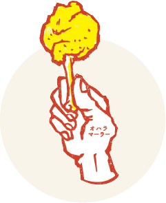

あなたに合う
こだわりの一皿を
あなたに合う
こだわりの一皿を
8つの簡単な直感質問に答えるだけで、
今のあなたに合う料理をご提案。
当店のこだわりを知ってください。

{{ currentQuestionIndex + 1 }}/ 8
Q{{ currentQuestionIndex + 1 }}. {{ currentQuestion.text }}
{{ option.imgText }}
ILLUSTRATION

{{ idx === 0 ? 'A.' : 'B.' }}{{ option.text }}
Please wait...
今日のあなたの一皿を準備しています...
あなたは
タイプ
{{ char }}
{{ finalResult.enTitle }}
{{ finalResult.description }}
FOOD
PHOTO
PHOTO
【おすすめメニュー】
{{ finalResult.recommendations.special }}
【特徴】
{{ finalResult.features }}